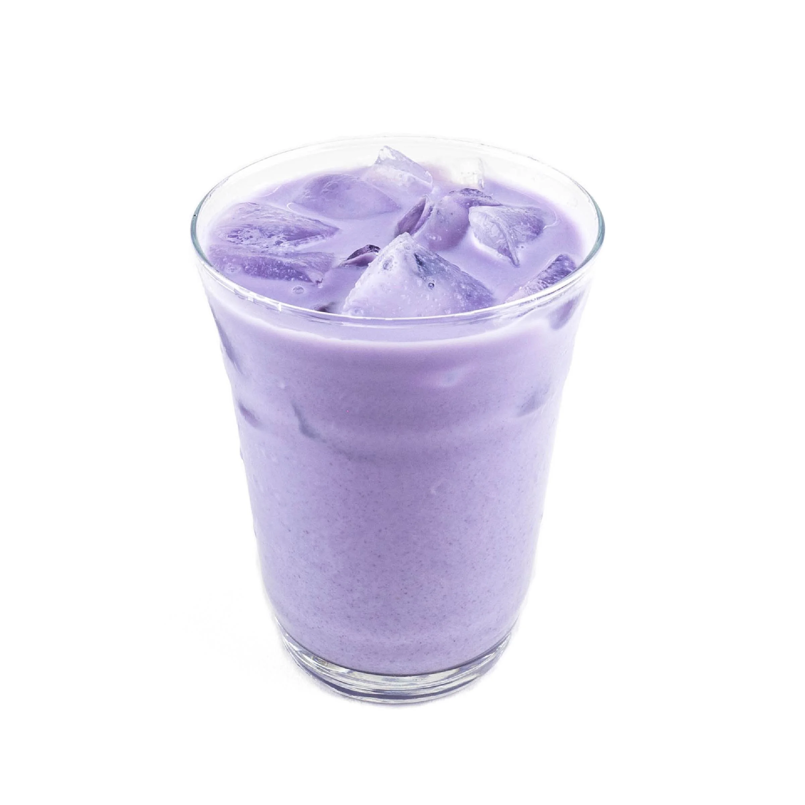

| Ice Coffee | |||
|---|---|---|---|

Price: Php 59.00 White Mocha Latte |
Description: A White Mocha Latte is a rich and creamy espresso-based drink made by combining bold shots of espresso with smooth, velvety steamed milk and sweet white chocolate syrup. Unlike a regular mocha that uses cocoa-based chocolate, the white mocha offers a sweeter, milder flavor with subtle notes of vanilla and cream. It’s often topped with a swirl of whipped cream, making it a comforting and indulgent treat for coffee lovers who enjoy a balance of sweetness and espresso’s natural bitterness. |
||

Price:Php 49.00 Spanish Latte |
Description: A Spanish Latte is a smooth and indulgent coffee drink made with a rich blend of espresso, steamed milk, and a touch of sweetened condensed milk. Unlike a regular latte, the condensed milk gives it a creamy texture and a natural caramel-like sweetness that balances perfectly with the bold flavor of espresso. Served hot or iced, it’s a comforting yet energizing coffee that brings a hint of European café tradition to every sip. |
||

Price:Php 59.00 Salted Caramel Latte |
Description: A Salted Caramel Latte is a delightful balance of sweet and savory flavors, made by blending rich espresso with steamed milk and smooth caramel sauce, then finished with a hint of sea salt. The caramel adds buttery sweetness, while the touch of salt enhances the overall flavor, creating a comforting yet indulgent drink. Often topped with whipped cream and a caramel drizzle, it’s the perfect treat for those who love a sweet pick-me-up with a little twist. |
||

Price:Php 59.00 Americano |
Description: An Iced Americano is a bold and refreshing coffee made by mixing rich espresso shots with cold water and ice. It delivers a smooth, crisp flavor that highlights the espresso’s natural aroma — perfect for those who love a pure, invigorating coffee taste without the sweetness. |
||
|
Price:Php 59.00 Spanish Latte |
Description: A rich and velvety blend of espresso, steamed milk, and a touch of sweetness. This creamy classic offers the perfect harmony of bold coffee and smooth, milky flavor a comforting indulgence in every sip. |
||
| Cookies | |||
|
Price:Php 35.00 Cookies Monster |

Price:Php 35.00 Cookies Monster |
||
| Non-Coffee | |||

Price:Php 79.00 Strawberry Matcha |
Description: A refreshing blend of earthy matcha and sweet, fruity strawberries. This vibrant drink combines creamy green tea with a touch of berry goodness, creating a perfect balance of flavor, color, and freshness in every sip |
||
|
Price:Php 79.00 Blueberry Matcha |
Description: A delightful fusion of earthy matcha and juicy blueberries. This drink blends the rich, creamy taste of green tea with the natural sweetness and tang of blueberries, creating a refreshing and colorful beverage that’s as energizing as it is delicious. |
||
|

Price:Php 79.00 Milky Ube |
Description: A delightful fusion of earthy matcha and juicy blueberries. This drink blends the rich, creamy taste of green tea with the natural sweetness and tang of blueberries, creating a refreshing and colorful beverage that’s as energizing as it is delicious. |
||
| Soda Pops | |||

Price:Php 49.00 Strawberry Fizz |
Description: A bubbly and refreshing blend of sweet strawberry syrup and sparkling soda, creating the perfect balance of fruity sweetness and fizzy fun. Served chilled, it’s a vibrant drink that’s sure to brighten your day with every sip. |
||

Price:Php 49.00 BlueBerry Fizz |
Description: A sparkling mix of juicy blueberry flavor and crisp soda, delivering a burst of fruity sweetness with a refreshing fizz. Perfectly chilled for a bright, bubbly, and thirst-quenching treat. | ||